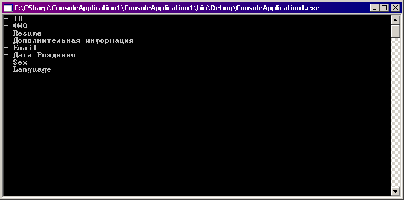
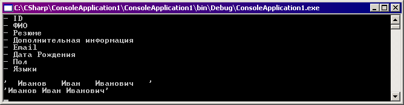
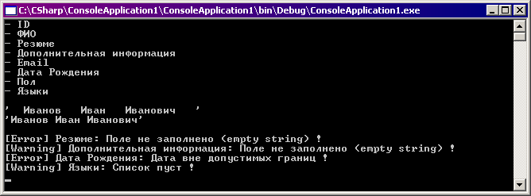

В корпоративном программировании при проектировании уровня доступа к данным часто возникают проблемы в работе с бизнес-объектами (бизнес-сущностями), связанные с их загрузкой, изменением, сохранением и перемещением между уровнями. Существует два основных подхода к решению этой задачи: использование собственных бизнес-сущностей и использование стандартных средств (ADO.NET предоставляет достаточно удобные средства, например, DataSet). Как пишет Дино Эспозито:
Но манипулировать DataSet-ами не всегда удобно, особенно в случае высокой детерминированности структуры данных. Достаточно сложно привязывать (bind) таблицы, связанные ключами с другими таблицами(справочниками), к спискам (Repeater, DataGrid) в ASP.NET страницах. Кроме того, при всем удобстве передачи между процессами, DataSet относительно громоздок по размеру и может достаточно долго сериализоваться/десериализоваться, занимая при этом циклы процессора и оперативную память. Основная альтернатива использованию DataSet (не считая возможности шамании над процессом его сериализации) - создание собственных бизнес-сущностей, более подходящих в случае основного упора на работу с данными экземпляров и скалярными значениями.
Бизнес-сущностью называется класс, инкапсулирующий свойства какой-либо отдельной сущности (например, пользователь, заказ, товар). Бизнес-сущность может иметь различные методы для работы с хранимыми данными, может использовать методы "фабрик данных" для управления своим жизненным циклом. Одной из основных операций над БС является отображение хранимых данных пользователю (я имею в виду в первую очередь WinForms, но это относится также к ASP.NET) и сохранение внесенных пользователем изменений в БД или других хранилищах. Здесь возникает дополнительная задача: необходимо запретить пользователю вводить некорректные данные.
В книге "Analyzing Requirements and Defining Microsoft(r) .NET Solution Architectures" (далее 70-300) написано:
То есть, необходимо обеспечивать не только производительность работы с БД, но и качество хранящихся в ней данных. Одна из задач обеспечения целостности данных - их валидация (Data validation). В отличие от остальных задач, определяющих наличие данных, валидация определяет годность, адекватность данных установленным бизнес-правилам. Вот основные методы проверки (70-300):
Необходимо проверять границы, формат и тип данных. Проверка может осуществляться:
В 70-300 классификация методов проверки немного другая (по месту расположения):
Майкрософт не рекомендует перегружать БД-сервер server-side проверками, поскольку это увеличивает нагрузку и может привести к возникновению узкого места (bottleneck), если сервер обслуживает большое количество клиентских запросов.
Мы не будем рассматривать методы валидации на сервере БД, рассмотрим клиентские.
Посвятив некоторое количество времени написанию кода-по-книжкам (подавляющее большинство примеров используют методы с DataSet), я решил для себя, что лично мне ближе "точная" работа с объектами - ручная загрузка и сохранение. Валидация на UI, конечно, более гибкая и мощная (например, можно менять содержимое, доступность и видимость одних контролов в зависимости от содержания других), но гораздо более трудоемкая с точки зрения создания и поддержки в случае относительно сложного UI (например 50-100 контролов, разбитых по вкладкам). Кроме того, такой код очень сложно использовать повторно, разве что отдельными кусочками.
Создав многочисленные методы проверки отдельных полей(свойств) или их групп, написав большое количество повторяющегося кода, обычно хочется придумать собственный "движок", который универсальным образом обрабатывает все возможные ситуации.
Такое желание возникло и у меня, и свой "движок" я решил написать с использованием атрибутов. Это решает сразу несколько задач. Во-первых, достигается простота создания и изменения. Чтобы добавить проверку свойства, достаточно приписать к нему нужный атрибут и указать дополнительные параметры (если требуется). Во-вторых, непрограммистам становится проще понимать и создавать правила, так как атрибуты можно описать в доступной форме(формализовать) и на основании этого описания составлять ТЗ.
Минусы такого подхода в том, что использование механизма отражения (Reflection) снижает быстродействие кода, а правила невозможно изменить без перекомпиляции. И если вторую проблему можно смягчить, вынеся сущность в отдельную сборку (тогда будет достаточно перекомпилировать только её), то с первой проблемой, по-видимому, ничего сделать нельзя :( Вообще, механизм валидации не критичен по времени, в крупных приложениях гораздо большее значение имеет его обслуживаемость. Например, при изменении любого правила необходимо применить это изменение к клиентским приложениям (эта проблема решается определенными архитектурами приложения). Существует и ещё одна проблема: поскольку атрибут применяется только для одного поля, невозможно создавать проверки взаимосвязанных полей (на самом деле можно, но только hardcoded проверки, т.е. зашитые в программном коде).
В качестве примера будем использовать такую сущность:
////// Person Entity /// public class Person { public Person(int id) { m_ID = id; } #region Properties #region Members int m_ID = -1; string m_Resume = string.Empty; string m_Communication = string.Empty; string m_ExtraInfo = string.Empty; string m_Email = string.Empty; string m_Name = string.Empty; DateTime m_Birthday = DateTime.Today; int m_Sex = -1; ArrayList m_languages = new ArrayList(); #endregion public int ID { get { return m_ID;} } public string Name { get { return m_Name;} set { m_Name = value;} } public string Resume { get { return m_Resume;} set { m_Resume = value;} } public string ExtraInfo { get { return m_ExtraInfo;} set { m_ExtraInfo = value;} } public string Email { get { return m_Email;} set { m_Email = value;} } public DateTime Birthday { get { return m_Birthday;} set { m_Birthday = value;} } public int Sex { get { return m_Sex;} set { m_Sex = value;} } public ArrayList Language { get { return m_languages;} set { m_languages = value;} } #endregion }1.15 ///
Думаю, с семантикой полей все понятно. В списке Language будем хранить идентификаторы иностранных языков (первичный ключ в справочнике). Создадим атрибут, который будет определять отображаемое имя поля как псевдоним. Для этого отнаследуемся от стандартного класса Attribute (в VS2005 это делается просто: Insert snippet->attribute). Определим строковое поле и конструктор, принимающий значение этого поля:
////// Базовый класс-атрибут для определения отображаемого имени поля /// [AttributeUsage(AttributeTargets.Property)] public class DisplayNameAttribute : Attribute { string m_name = ""; ////// Отображаемое имя /// public virtual string Name { get {return m_name;} } public DisplayNameAttribute(string displayName) { m_name = displayName; } }
Обратите внимание, что мы добавили перед классом атрибутов AttributeUsageAttribute, определяющий ряд важных параметров. Вот что написано об AttributeUsageAttribute в MSDN (http://msdn.microsoft.com/library/rus/default.asp?url=/library/rus/cpref/html/frlrfsystemattributeusageattributeclasstopic.asp):
В примере я указал AttributeTargets.Property, следовательно, данный атрибут может применяться только к свойствам. Остальные параметры были оставлены по умолчанию: AllowMultiple=false (атрибут может быть применен к свойству только один раз) и Inherited=true (атрибут будет наследоваться).
Что можно сделать с этим атрибутом? Применить к свойству! Давайте добавим псевдонимы к нескольким свойствам и напишем метод, который с помощью отражения будет получать список всех свойств объекта this и выводить на консоль их имена (если у свойства есть DisplayNameAttribute, то вместо имени свойства будет выводиться псевдоним):
public int ID
...
[DisplayName("ФИО")]
public string Name
...
public string Resume
...
[DisplayName("Дополнительная информация")]
public string ExtraInfo
...
public string Email
...
[DisplayName("Дата Рождения")]
public DateTime Birthday
...
public int Sex
...
public ArrayList Language
...
///
/// Отображает список имен свойств
///
public void ShowNames()
{
IDictionary result = new Hashtable();
// Получить атрибуты уровня свойств.
// Получить все свойства класса и поместить их в массив
PropertyInfo[] pInfo = this.GetType().GetProperties();
for (int j=0; jstring _fieldName = pInfo[j].Name;
Attribute dna = Attribute.GetCustomAttribute(pInfo[j], typeof(DisplayNameAttribute));
if (dna != null)
_fieldName = ((DisplayNameAttribute)dna).Name;
Console.WriteLine("- " + _fieldName);
}
}
}
///
/// The main entry point for the application.
///
[STAThread]
static void Main(string[] args)
{
Person p = new Person(-1);
p.ShowNames();
Console.ReadLine();
...
Вот результаты вывода на экран:

Мы получили то, что было нужно: понятные пользователю названия полей сущности.
А что будет, если применить атрибут к одному свойству несколько раз?
[DisplayName("ФИО")]
[DisplayName("Имя")]
public string Name
{
get { return m_Name;}
set { m_Name = value;}
}
Из-за того, что нет явного разрешения нескольких экземпляров атрибута для одного элемента (AllowMultiple=true), получим ошибку при компиляции:
Теперь создадим базовый класс, определяющий общие свойства и методы для всех атрибутов нормализации. Под нормализацией я понимаю приведение значения свойства к одному из возможных валидных (корректных) значений. Свойство NormalizationOrder будет объяснено чуть позже, а виртуальный метод Normalize - это тот метод атрибута, который и будет выполнять основную работу. Он должен быть переопределен в дочерних классах.
////// Базовый класс-атрибут для создания атрибутов нормализации /// [AttributeUsage(AttributeTargets.Property)] public abstract class NormalizationBaseAttribute : Attribute { int m_normalizationOrder = 0; ////// Порядковый номер при нормализации /// public virtual int NormalizationOrder { get {return m_normalizationOrder;} } public NormalizationBaseAttribute(int normalizationOrder) { m_normalizationOrder = normalizationOrder; } ////// Нормализовать указанное значение /// /// Значение для нормализации ///Нормализованный объект public virtual object Normalize(object value) { return "#NormalizationBase - Normalize method not overrided!"; } }
Определим несколько атрибутов, которые будем использовать на практике. Вот атрибут, выполняющий отсечение определенных символов с начала и/или конца строки. Отсекаемый символ по умолчанию - пробел.
////// Атрибут нормализации для отсечения символов строки слева и/или справа /// public class NormalizationStringTrimAttribute : NormalizationBaseAttribute { #region members char m_trimChar = ' '; ////// Отсекаемый символ /// public virtual char TrimChar { get {return m_trimChar;} set {m_trimChar = value;} } bool m_trimLeft = true; ////// Отсекать слева (с начала строки) /// public virtual bool TrimLeft { get {return m_trimLeft;} set {m_trimLeft = value;} } bool m_trimRight = true; ////// Отсекать справа (с конца строки) /// public virtual bool TrimRight { get {return m_trimRight;} set {m_trimRight = value;} } #endregion public NormalizationStringTrimAttribute(int normalizationOrder) : base(normalizationOrder) {} public override object Normalize(object value) { if (m_trimChar == ' ') { if (m_trimLeft & m_trimRight) return value.ToString().Trim(); else if (m_trimLeft) return value.ToString().TrimStart(); else if (m_trimRight) return value.ToString().TrimEnd(); else return value; } else { if (m_trimLeft & m_trimRight) return value.ToString().Trim(m_trimChar); else if (m_trimLeft) return value.ToString().TrimStart(m_trimChar); else if (m_trimRight) return value.ToString().TrimEnd(m_trimChar); else return value; } } }
Определим ещё один атрибут для замены нескольких пробелов одним:
////// Атрибут нормализации строки для замены нескольких пробелов (до 24) подряд одним /// public class NormalizationStringWhiteSpaceReduceAttribute : NormalizationBaseAttribute { public NormalizationStringWhiteSpaceReduceAttribute(int normalizationOrder):base(normalizationOrder) {} public override object Normalize(object value) { return value.ToString().Replace(" ", " ").Replace(" ", " ").Replace(" ", " "); } }
Теперь у нас есть два атрибута, которые уже можно как-то использовать. Можно, например, написать такой код:
[DisplayName("ФИО")]
[NormalizationStringTrim()]
[NormalizationStringWhiteSpaceReduce()]
public string Name
{
get { return m_Name;}
set { m_Name = value;}
}
Мы предполагаем, что функция получит все атрибуты нормализации и, последовательно перебирая их, обработает свойство. Но возникает вопрос: в какой последовательности атрибуты будут возвращены отражением? Это может быть очень важно. Будет ли последовательность совпадать с порядком объявления атрибутов в коде? К сожалению, ответ "Нет". Майкрософт не определяет правила хранение я возвращения массива атрибутов, а в спецификациях языков можно найти только строчки наподобие "несколько атрибутов указываются в списке с разделителями-запятыми. Порядок указания атрибутов не имеет значения." Придется добавить параметр, который будет определять порядок (последовательность) применения атрибутов. Для этого и предназначено виртуальное свойство NormalizationOrder. Сценарий действий будет таков:
Для реализации второго пункта понадобится класс NormalizationComparer, предназначенный для сравнения двух атрибутов, наследующихся от NormalizationBaseAttribute. Сравнение производится по свойству NormalizationOrder:
////// Класс-сравнитель для NormalizationBaseAttribute /// (сравнивает по NormalizationOrder) /// public class NormalizationComparer : IComparer { #region IComparer Members public int Compare(object x, object y) { return ((NormalizationBaseAttribute)x).NormalizationOrder.CompareTo( ((NormalizationBaseAttribute)y).NormalizationOrder ); } #endregion }
Основная функция нормализации:
////// Нормализует поля объекта согласно установленным правилам /// public void Normalize() { // Получить атрибуты уровня свойств. // Получить все свойства данного класса и поместить их в массив PropertyInfo[] pInfo = this.GetType().GetProperties(); // атрибуты всех свойств класса for (int j=0; jnew NormalizationComparer()); for (int k=0; kif (att != null) pInfo[j].SetValue(this, att.Normalize(pInfo[j].GetValue(this, null)), null); } } }
Вот небольшой тестовый код:
////// The main entry point for the application. /// [STAThread] static void Main(string[] args) { Person p = new Person(-1); p.ShowNames(); Console.ReadLine(); p.Name = " Иванов Иван Иванович "; Console.WriteLine("'{0}'", p.Name); p.Normalize(); Console.WriteLine("'{0}'", p.Name); Console.ReadLine(); ...
В процессе работы он выдаст следующий результат:

Как видите, оба атрибута отработали и привели свойство к требуемому виду.
Отлично! Но нормализацией следует пользоваться с осторожностью, ведь пользователь уверен, что ввел одно значение, а перед записью в БД произошла нормализация, и значение могло измениться... Возможны 3 варианта:
Я предпочитаю второй вариант. Если ошибок нет, данные сохраняются, и актуальные значения отображаются пользователю.
Теперь напишем аналогичный базовый класс для атрибутов валидации:
////// Базовый класс-атрибут для создания атрибутов валидации /// [AttributeUsage(AttributeTargets.Property)] public abstract class ValidationBaseAttribute : Attribute { int m_validationOrder = 0; ////// Порядок проведения валидации /// public virtual int ValidationOrder { get {return m_validationOrder;} } WarningLevel m_level = WarningLevel.Warning; ////// Уровень предупреждения /// public virtual WarningLevel Level { get {return m_level;} set {m_level = value;} } ////// Базовый атрибут валидации /// /// Порядковый номер в процессе валидации public ValidationBaseAttribute(int validationOrder) { m_validationOrder = validationOrder; } ////// Произвести валидацию /// /// значение для проверки ///Строку с предупреждением, либо пустую строку если всё в порядке public virtual string Validate(object value) { return "#ValidationBase - Validate method not overrided!"; } }
Напишем также сортировщик (по аналогии с нормализацией) и несколько атрибутов валидации (их код можно найти в прилагаемом архиве):
Напишем несложный код проверки. Получим список всех свойств объекта, для каждого из которых запросим список унаследованных от ValidationBaseAttribute атрибутов. Затем вызовем виртуальный (переопределенный в дочерних классах) метод Validate, который в случае отсутствия предупреждений возвратит пустую строку, а в противном случае - строку сообщения. Эти строки сообщений будем добавлять в словарь (Hashtable)
////// Проверить объект на соответствие установленным ограничениям /// ///Словарь найденных несоответствий public IDictionary Validate() { IDictionary result = new Hashtable(); // Получить атрибуты уровня свойств. // Получить все свойства данного класса и поместить их в массив PropertyInfo[] pInfo = this.GetType().GetProperties(); // атрибуты всех свойств класса for (int j=0; jif (atts.Length == 0) continue; Array.Sort(atts, new ValidationComparer()); string _fieldName = pInfo[j].Name; Attribute dna = Attribute.GetCustomAttribute(pInfo[j], typeof(DisplayNameAttribute)); if (dna != null) _fieldName = ((DisplayNameAttribute)dna).Name; for (int k=0; kif (att != null) { string vr = att.Validate(pInfo[j].GetValue(this, null)); if (vr != "") { result.Add(_fieldName +": "+ vr, att.Level); //если ошибка - прекратить проверку данного поля if (att.Level == WarningLevel.Error) break; } } } } //additional :( return result; }
После строчки //additional можно вызвать собственные, комплексные функций проверки введенных данных, определенные в этом же классе. Словарь возвращенных предупреждений выведем в диалоговом окне в виде списка, чтобы пользователь мог с ними ознакомиться (в примере осуществляется вывод в консоль).
И результаты выполнения следующего кода:
////// The main entry point for the application. /// [STAThread] static void Main(string[] args) { Person p = new Person(-1); p.ShowNames(); Console.ReadLine(); p.Name = " Иванов Иван Иванович "; Console.WriteLine("'{0}'", p.Name); p.Normalize(); Console.WriteLine("'{0}'", p.Name); Console.ReadLine(); p.Validate(); Console.ReadLine(); }
Теперь будут такими:

Итак, несмотря на некоторые недостатки, данный подход имеет право на существование, что доказано на практике (я использую его в достаточно крупном проекте).
Тестовый проект (для VisualStudio.NET 2003), рассмотренный в статье, можно загрузить здесь.